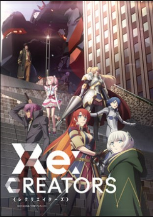
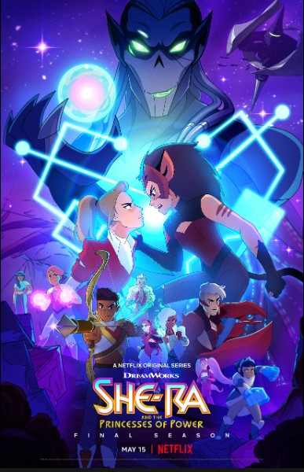
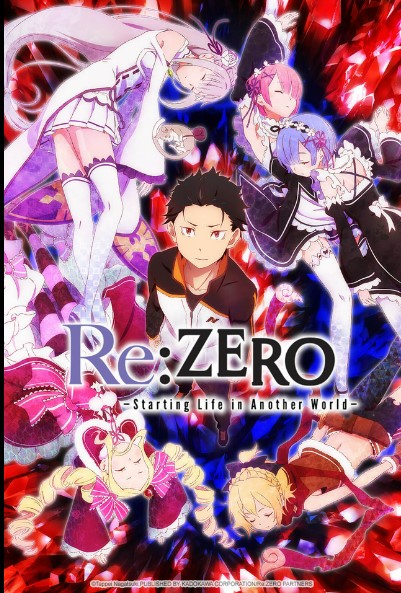

FANTASY

BLACK CLOVER
Genres: fantasy, Adventure, Action
Episodes:170
Rating: 8.3/10 · 23,401 votes
Black Clover is a Japanese anime series written and illustrated by Yūki Tabata. It has been serialized in Shueisha's shōnen manga magazine
Weekly Shōnen Jump since February 2015, with its chapters collected in 33 tankōbon volumes as of November 2022. The story follows Asta, a
young boy born without any magic power. This is unknown to the world he lives in because seemingly everyone has some sort of magic power.
With his fellow mages from the Black Bulls, Asta plans to become the next Wizard King.

JOJO'S BIZARRE ADVENTURE
Genres: Fantasy, Adventure, Action
Episodes:152
Rating: 8.4/10 · 23,823 votes
JoJo's Bizarre Adventure, also known as JoJo's Bizarre Adventure: The Animation, is a Japanese anime television series produced by David
Production. An adaptation of the Japanese manga series of the same name by Hirohiko Araki, the series focuses on the mysterious adventures
of the Joestar family across generations, from the end of the 19th century to modern times. The series was first broadcast on Tokyo MX
before entering syndication on 4 JNN stations, BS11, and Animax.

FAIRY TALE
Genres: Fantasy, Action, Comedy, Adventure
Episodes: 328
Rating: 7.9/10 · 25,009 votes
Fairy Tail is an anime series adapted from the manga of the same title by Hiro Mashima. Produced by A-1 Pictures and Satelight, and directed
by Shinji Ishihira, it was broadcast on TV Tokyo from 12 October 2009, to 30 March 2013. It later continued its run on 5 April 2014, and
ended on 26 March 2016. A third and final series premiered on 7 October 2018. The series follows the adventures of Natsu Dragneel, a member
of the Fairy Tail wizards' guild who is searching for the dragon Igneel, and partners with Lucy Heartfilia, a celestial wizard.

DOTA: DRAGON'S BLOOD
Genres: Fantasy, Adventure, Action
Episodes:24
Rating: 7.8/10 · 19,509 votes
Set in a fantasy world of magic and mysticism, the story follows a Dragon Knight, Davion, who hunts and slays dragons to make the world a
safer place. In a battle between demons and the dragon race of Eldwurm, the dragon Slyrak merges his soul with Davion. Along with the sun
princess Mirana, Davion pursues a journey to stop the demon Terrorblade, who wants to kill all dragons and collect their souls.

I'M STANDING ON A MILLION LIVES
Genres: Fantasy, Adventure
Episodes:24
Rating: 6.5/10 · 900 votes
I'm Standing on a Million Lives is a Japanese anime series written by Naoki Yamakawa and illustrated by Akinari Nao. It has been serialized
in Kodansha's shōnen manga magazine Bessatsu Shōnen Magazine since June 2016. The manga is licensed in North America by Kodansha USA. An
anime television series adaptation by Maho Film aired from October to December 2020, and a second season aired from July to September 2021.

RE:CREATORS
Genres: Fantasy, Action
Episodes:22
Rating: 7/10 · 996 votes
Re:Creators is a Japanese anime television series produced by Troyca. The series is about a high school student who becomes involved in a
battle between several characters from manga, anime, and video games who somehow appear in the real world. It aired from April to September
2017, and was exclusively streamed by Amazon on their Amazon Video service. A manga adaptation by Daiki Kase was serialized in Shogakukan's
Monthly Sunday Gene-X from April 2017 to November 2019.

SHE-RA
Genres: Fantasy, Adventure, Action, Sword
Episodes:52
Rating: 8/10 · 16,274 votes
She-Ra and the Princesses of Power is an American animated streaming television series developed by ND Stevenson and produced by DreamWorks
Animation Television. Like the 1985 Filmation series She-Ra: Princess of Power, of which it is a reboot, She-Ra and the Princesses of Power
tells the tale of Adora, an adolescent who can transform into the heroine She-Ra and leads a group of other magical princesses in a rebellion
against the evil Lord Hordak and his Horde. Its telling of how Adora discovers her identity deviates from its original He-Man and She-Ra: The
Secret of the Sword predecessor and source material, in which the Sorceress of Grayskull sent Adam/He-Man to find his twin sister, Adora,
resulting in the discovery of her She-Ra identity. The series ran on Netflix from November 13, 2018 to May 15, 2020, having released 52
episodes over 5 seasons.

RE-ZERO
Genres: Dark Fantasy, Adventure
Episodes:50
Rating: 8.1/10 · 18,777 votes
Re:Zero − Starting Life in Another World, often referred to simply as Re:Zero and also known as Re: Life in a different world from zero, is
a Japanese light novel series written by Tappei Nagatsuki and illustrated by Shin'ichirō Ōtsuka. The story centers on Subaru Natsuki, a
hikikomori who suddenly finds himself transported to another world on his way home from the convenience store. The series was initially
serialized on the website Shōsetsuka ni Narō from 2012 onwards. Thirty-one light novels, as well as five side story volumes and seven short
story collections have been published by Media Factory under their MF Bunko J imprint.